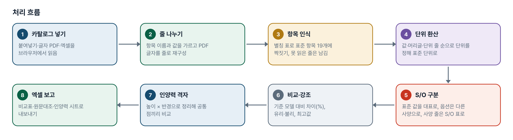
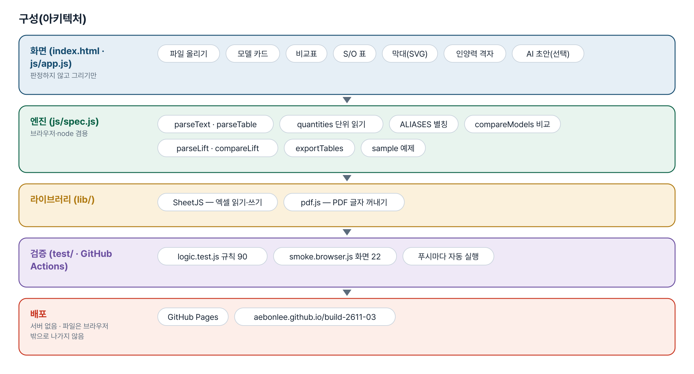
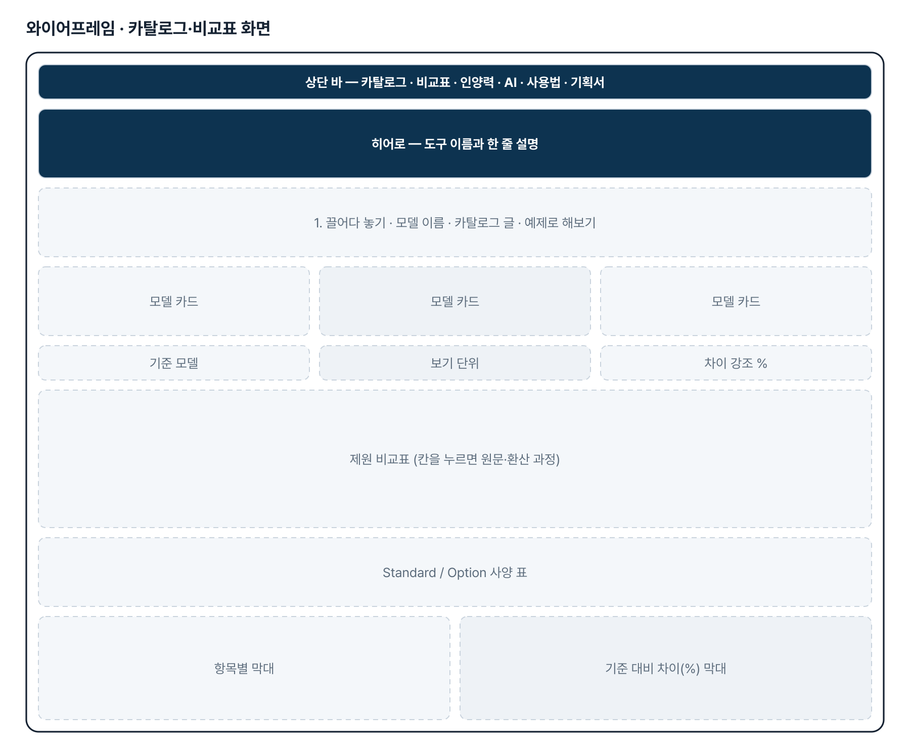
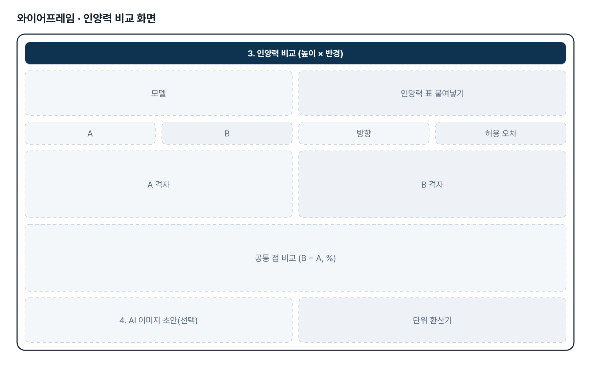
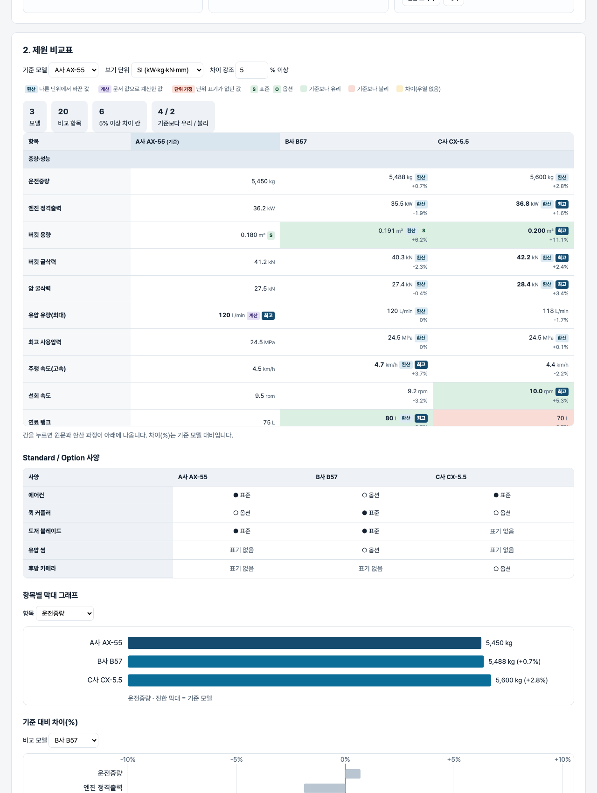

기획서 내려받기
파이프라인 · 아키텍처 · 와이어프레임 · 개발일지가 들어간 워드 문서입니다. 버전마다 따로 남깁니다.
| 버전 | 날짜 | 바뀐 점 | 파일 |
|---|---|---|---|
| v1.0 | 2026-11-02 | 첫 판 — 카탈로그 읽기·표준 항목·단위 환산·S/O·비교표·그래프·인양력 격자 비교·엑셀 내보내기 / 기획서 워드 판·파이프라인·아키텍처·와이어프레임 추가 | 워드 내려받기 |
요구사항과 구현
| 기획서 요구 | 구현 |
|---|---|
| 웹페이지·PDF 에 분산된 제원 수집 | 붙여넣기 · 글자 PDF(pdf.js, 줄 재구성) · 엑셀(가로 표·세로 표) |
| 장비 성능 제원(엔진 출력·굴삭력·유압 유량 등) | 표준 항목 10개 — 운전중량·정격출력·버킷 용량·버킷/암 굴삭력·유압 유량·사용압력·주행/선회 속도·연료 탱크 |
| 치수·작업범위 제원 | 표준 항목 9개 — 전장·전폭·전고·후방 선회반경·슈 폭·최대 굴삭 깊이/반경/높이·최대 덤프 높이 |
| 제조사별 형식을 표준 데이터로 변환 | 항목 별칭 표(ALIASES)·단위 10차원 환산·「단위: mm」 줄·범위 밖 값 경고, 화면에서 별칭 기억 |
| Standard / Option 구분 | (표준)(옵션)(Std)(Opt)●○·구분 열 → 대표값은 표준, 사양 줄은 S/O 표 |
| 이미지형 인양력 표를 비교 가능한 데이터로 | 높이 × 반경 격자(정면/측면·유압 한계·kg/lb·m/ft), 공통 점 비교, 이미지는 AI 초안(선택) 후 사람이 대조 |
| 비교표·시각화·Excel 자동 생성 | 기준 대비 차이(%)·유리/불리 강조, 막대 그래프 2종, 엑셀 7시트 |
그림으로 보기





개발일지
2026-11-13 · 마무리 — 로그인 · 게시판 · 첫 화면(판 2026-11-13.1)
- 과정 마무리 묶음을 붙임(마산 2차수 과제와 같은 키트) — 로그인 전 첫 화면(사진 3장 · 기능 · 사용 순서 · 기획서), 회원가입 → 사용 신청 → 관리자 승인, 게시판 · 새 글 알림, 내 정보, 관리(구성원 승인 · 첫 화면 모양)
- Supabase 표 · 함수 · 정책은 전부 build261103_ 로 시작(auth.sql · board.sql · site.sql). 과정용 프로젝트에 적용했고, supabase/README.md 순서대로 본인 프로젝트로 옮길 수 있음
- 도구의 계산 · 판정 · 저장 방식은 그대로(업무 자료는 지금처럼 브라우저 안에서만 처리). 기획서 · 사용법 쪽은 로그인 없이 읽음
- 내 PC(파일로 열기 · localhost)에서는 로그인을 건너뜀 — 주소 끝에 ?auth=1 을 붙이면 로그인 화면을 볼 수 있음
2026-11-02 · 첫 판
- 패들릿 build02 조민규 「건설기계 경쟁사 제원 조사 자동화」를 작업 지시서(CLAUDE.md)로 옮기고 구현
- 엔진 spec.js — 별칭·단위 환산·S/O·가로/세로 엑셀·PDF 줄·비교·인양력 격자
- 화면 — 모델 카드·비교표·S/O 표·막대·인양력·AI 초안·환산기·엑셀
- 규칙 테스트 90 · 화면 테스트 22 통과